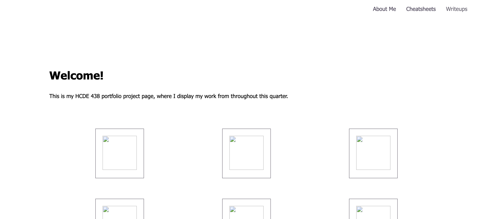
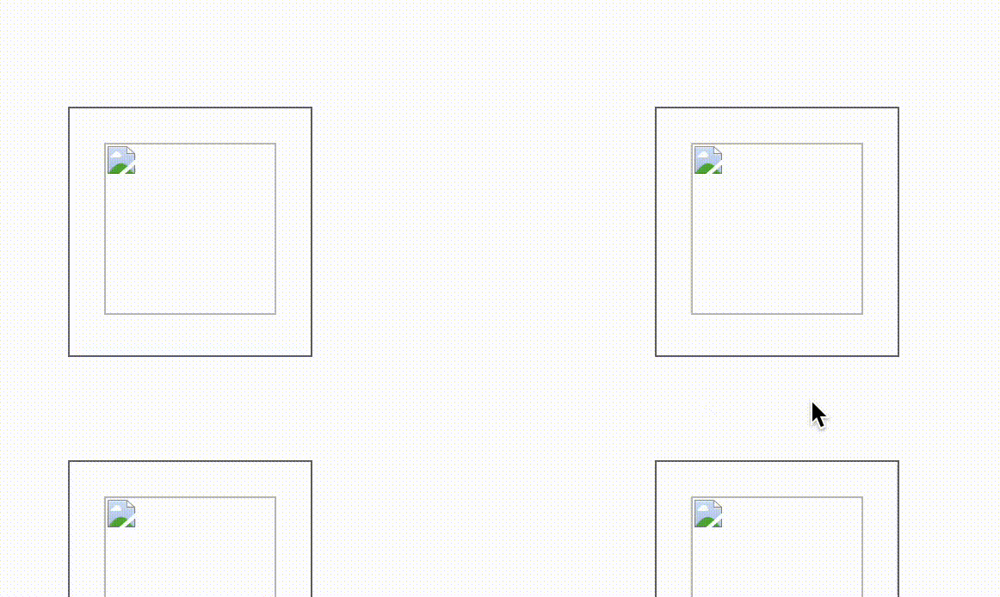

My first step was to map out the page directory of my site. I started with the Home page and then linked my About Me and Cheatsheet pages. Once I had the barebones of my site, I was able to embellish the details with CSS. Right now, I'm in the process of decorating my site and expanding it beyond its basic functionalities and requirements.
One issue that I had with hosting my site through GitHub and ensuring that the proper version was the one that was being displayed on my URL.
I chose to do a hover box shadow transition because it is subtle. I added a 'hover' state property in my style.css file.
